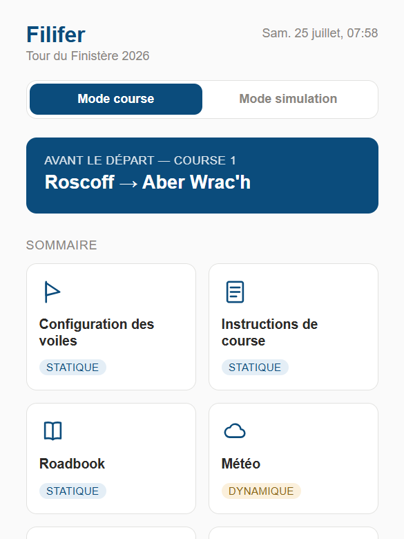
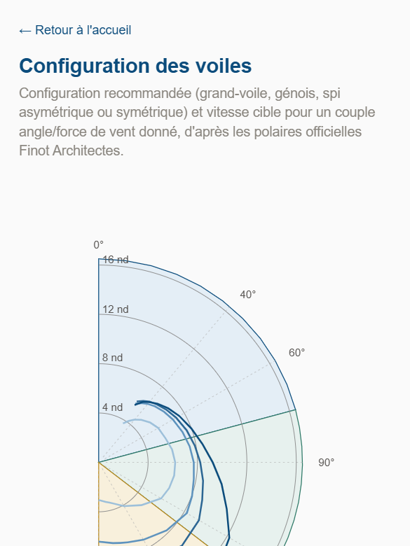
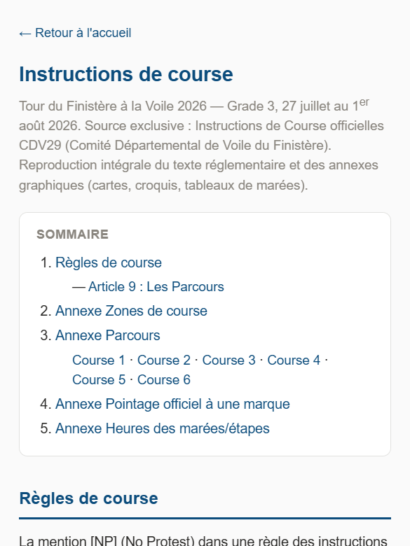
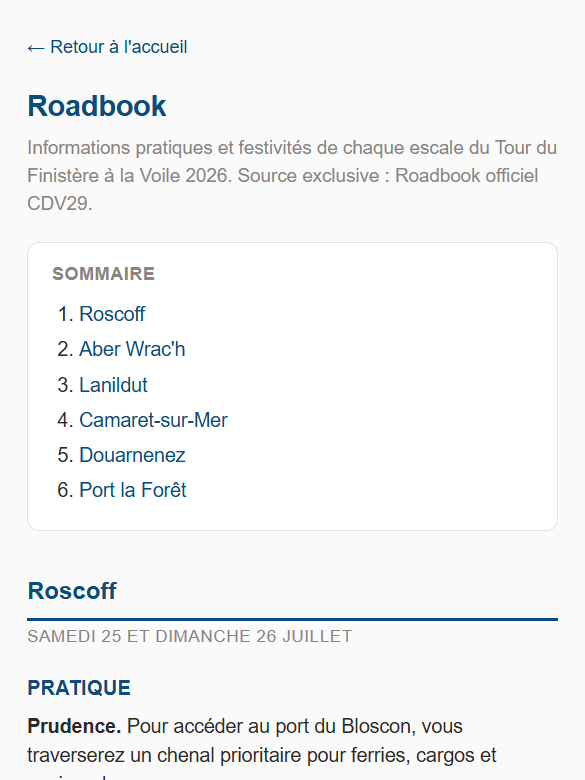
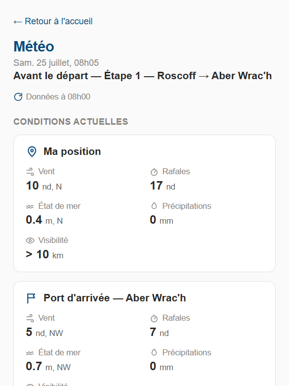
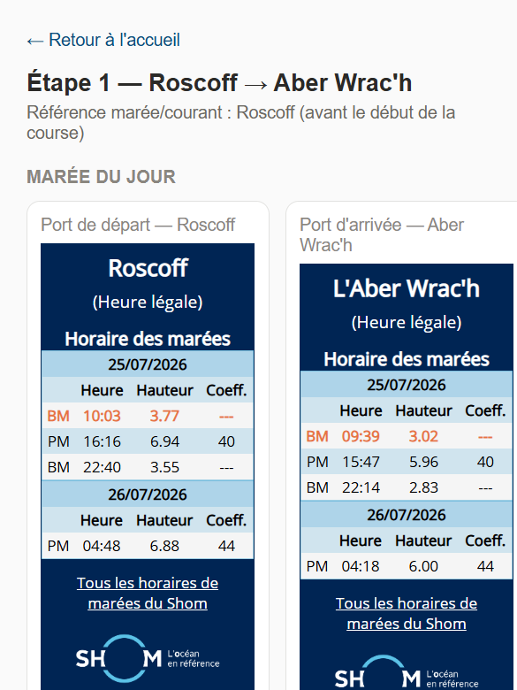
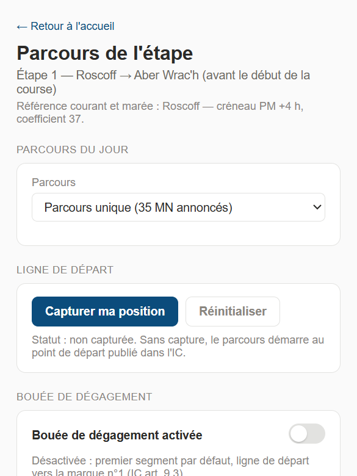

Filifer — FRA 27614
Mode d'emploi de l'application d'aide à la régate
Tour du Finistère 2026
Sommaire
L'application est accessible à l'adresse : antoine-teriya.github.io/tourduf-filif
Sur téléphone, l'ajouter à l'écran d'accueil (menu du navigateur → « Ajouter à l'écran d'accueil ») pour un accès direct, comme une application classique.
La page d'accueil affiche le sommaire des 6 fonctionnalités, réparties en deux familles :
Chaque page fonctionnelle propose un bouton Retour à l'accueil ; pas de menu permanent.

Deux boutons en haut de l'accueil : Mode course (par défaut) et Mode simulation.
Le mode simulation permet de choisir un jour, une heure et une position fictifs, pour prévisualiser l'app comme si on était à un autre moment de la course, utile pour préparer une étape à l'avance. Une fois activé, chaque page fonctionnelle l'indique par un bandeau Mode simulation actif, avec possibilité d'ajuster les valeurs directement depuis la page.
Diagramme en demi-compas indiquant, pour un angle et une force de vent donnés, la configuration recommandée (grand-voile, génois, spi asymétrique ou symétrique) et la vitesse cible. Données issues des polaires officielles Finot Architectes.

Reprise intégrale des instructions de course officielles CDV29, en version consultable au fil du défilement (schémas de course, cartes, zones).

Informations pratiques et festivités de chaque escale (Roscoff, Aber Wrac'h, Lanildut, Camaret-sur-Mer, Douarnenez, Port la Forêt) : accès port, horaires, contacts VHF, programme festif. Source exclusive : roadbook officiel CDV29.

Deux points de mesure affichés : la position du bateau (ou le port de départ si la géolocalisation n'est pas disponible) et le port d'arrivée de l'étape. Données fournies par Open-Meteo (prévisions générales et composante marine).
Actualisation : les données sont rechargées à chaque ouverture de la page ; il n'y a pas d'actualisation automatique en arrière-plan tant que la page reste affichée. L'horodatage indiqué (« Données à HHhMM ») correspond à l'heure de la donnée la plus récente fournie par Open-Meteo, pas à l'heure de consultation. Pour rafraîchir, il suffit de recharger la page.

Fond de carte OpenStreetMap et balisage OpenSeaMap ; flèches de courant issues du produit SHOM « Courants de marée 2D » (licence Etalab).
Affichage adapté au zoom : le nombre de flèches visibles s'ajuste automatiquement au niveau de zoom, pour rester lisible. Vue large : une flèche représentative par zone. Zoom rapproché : affichage progressif de tous les points disponibles, jusqu'à environ 1 140 points selon l'étape.
Zone couverte : les points affichés suivent le tracé réel du parcours de l'étape, avec une marge de 5 milles nautiques de part et d'autre, pour couvrir les écarts de route habituels au près ou au largue. Exception : l'étape 5 (Douarnenez), dont le parcours n'est pas fixé par des points de passage dans les instructions de course ; la zone couverte y est donc plus large, centrée sur la baie.

Vent réel observé : deux champs à renseigner, direction (en degrés vrais) et force (en nœuds). Ces valeurs alimentent directement le calcul de tous les segments affichés plus bas ; toute modification recalcule immédiatement les résultats.
Bouée de dégagement (case à cocher) : activée, deux champs supplémentaires apparaissent, distance depuis la ligne de départ (en milles nautiques) et cap depuis la ligne (en degrés). L'app calcule automatiquement les coordonnées et insère la bouée comme première marque, juste après la ligne de départ. Désactivée par défaut : le premier segment va directement de la ligne de départ à la marque n°1, conformément à l'article 9.3 des instructions de course.
Restitution par segment : pour chaque tronçon entre deux marques, l'app affiche cap direct, distance et angle au vent ; la configuration de voile recommandée au vent seul (même logique que la fonctionnalité 1), avec cap optimal, vitesse cible et VMG. Si une donnée de courant existe sur la zone, un second bloc indique le cap à tenir compte tenu du courant, la vitesse surface, la vitesse fond et la route fond. Si la route directe n'est pas tenable, l'amure à privilégier est signalée, avec une comparaison de progression entre les deux amures possibles.
